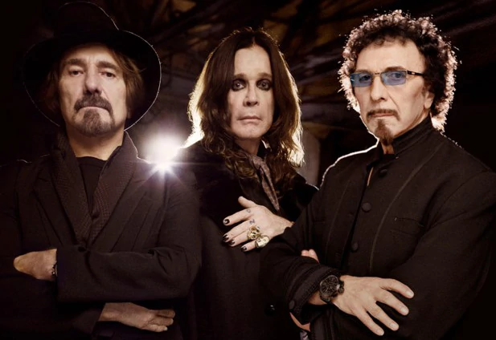

BLACK SABBATH

Black Sabbath lineup: Geezer Butler, Ozzy Osbourne, Tony Iommi
Black Sabbath are an English heavy metal band, formed in Birmingham in 1968, by guitarist Tony Iommi, bassist Geezer Butler, singer Ozzy Osbourne, and drummer Bill Ward. The band has since experienced multiple line-up changes, with Tony Iommi the only constant presence in the band through the years. Originally formed in 1968 as a heavy blues rock band named Earth, the band began incorporating occult themes with horror-inspired lyrics and tuned-down guitars. Despite an association with occult and horror themes, Black Sabbath also composed songs dealing with social instability, political corruption, the dangers of drug abuse and apocalyptic prophecies of the horrors of war.
Osbourne's heavy drug use led to his dismissal from the band in 1979, after which he began a successful solo career, selling over 100 million albums. He was replaced by former Rainbow vocalist Ronnie James Dio. After a few albums with Dio's vocals and songwriting collaborations, Black Sabbath endured a revolving line-up in the 1980s and 90s that included vocalists Ian Gillan, Glenn Hughes, Ray Gillen and Tony Martin, as well as multiple members of Deep Purple and Rainbow. In 1992, Iommi and Butler rejoined Dio and drummer Vinny Appice to record Dehumanizer. The original line-up reunited with Osbourne in 1997 and released a live album Reunion. In January 2013, Black Sabbath (with Brad Wilk replacing Ward) announced that they are releasing a new album, 13, in June 2013.
Black Sabbath are cited as pioneers of heavy metal. The band helped define the genre with releases such as quadruple-platinum Paranoid, released in 1970. They were ranked by MTV as the "Greatest Metal Band" of all time, and placed second in VH1's "100 Greatest Artists of Hard Rock" list, behind Led Zeppelin. Rolling Stone magazine ranked them among the 100 greatest artists of all time. They have sold over 15 million records in the United States and over 70 million records worldwide. Black Sabbath were inducted into the UK Music Hall of Fame in 2005 and the Rock and Roll Hall of Fame in 2006.
Osbourne's heavy drug use led to his dismissal from the band in 1979, after which he began a successful solo career, selling over 100 million albums. He was replaced by former Rainbow vocalist Ronnie James Dio. After a few albums with Dio's vocals and songwriting collaborations, Black Sabbath endured a revolving line-up in the 1980s and 90s that included vocalists Ian Gillan, Glenn Hughes, Ray Gillen and Tony Martin, as well as multiple members of Deep Purple and Rainbow. In 1992, Iommi and Butler rejoined Dio and drummer Vinny Appice to record Dehumanizer. The original line-up reunited with Osbourne in 1997 and released a live album Reunion. In January 2013, Black Sabbath (with Brad Wilk replacing Ward) announced that they are releasing a new album, 13, in June 2013.
Black Sabbath are cited as pioneers of heavy metal. The band helped define the genre with releases such as quadruple-platinum Paranoid, released in 1970. They were ranked by MTV as the "Greatest Metal Band" of all time, and placed second in VH1's "100 Greatest Artists of Hard Rock" list, behind Led Zeppelin. Rolling Stone magazine ranked them among the 100 greatest artists of all time. They have sold over 15 million records in the United States and over 70 million records worldwide. Black Sabbath were inducted into the UK Music Hall of Fame in 2005 and the Rock and Roll Hall of Fame in 2006.